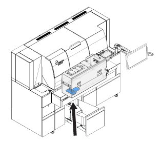
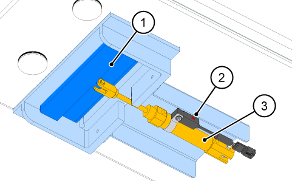
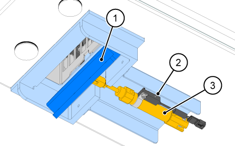

Testing the Waste Door
This topic includes information about how to test the waste door for the reagent storage module (RSM).
| Table of Contents |
|---|
| Waste Door Indicators |
| Visually Inspecting the Waste Door. |
| Closing the Waste Door |
| Opening the Waste Door |
| Checking the Status of the Waste Door |
Waste Door Indicators
The following table lists the indicators for the waste door for the reagent storage module (RSM).
| If the Waste Door Is... | Sensor LED | OperateWasteChuteDoor | ReagentStorage.WasteDoor.OpenSensor |
|---|---|---|---|
| Closed | ON | open is cleared | stateName displays Inactive |
| Open | OFF | open is selected | stateName displays Active |
| See Visually Inspecting the Waste Door. for more information. | See Closing the Waste Door and Opening the Waste Door for more information. | See Checking the Status of the Waste Door for more information. | |
Visually Inspecting the Waste Door.
- Open the solid waste door.
- Remove the solid waste bin.
- Inspect the underside of the reagent storage module to determine whether the waste door for the RSM is visibly closed or open.

- Inspect the waste door sensor, which is located on the waste door air cylinder.
- If the LED light is
ON, the door should be visibly closed.

1 Waste door (closed) 2 Sensor LED (on) 3 Waste door air cylinder - If the LED light is
OFF, the door should be visibly open.

1 Waste door (open) 2 Sensor LED (off) 3 Waste door air cylinder
- If the LED light is
ON, the door should be visibly closed.
Closing the Waste Door
- In the Machine Control App go to .
- On the Action tab select
OperateWasteChuteDoor.
Note: If the waste chute door is open, open should already be selected.
- Clear open.
- Select Execute.
- The waste door should be visibly closed.
Opening the Waste Door
- In the Machine Control App go to .
- On the Action tab select
OperateWasteChuteDoor.
Note: If the waste chute door is closed, open should not already be selected.
- Select open.
- Select Execute.
- The waste door should be visibly open.
Checking the Status of the Waste Door
- In the Machine Control App go to .
- On the Action tab select GetNamedState.
- Select
Execute.
- If the door is visibly closed, the stateName box should display Inactive.
- If the door is visibly open, the stateName box should display Active.